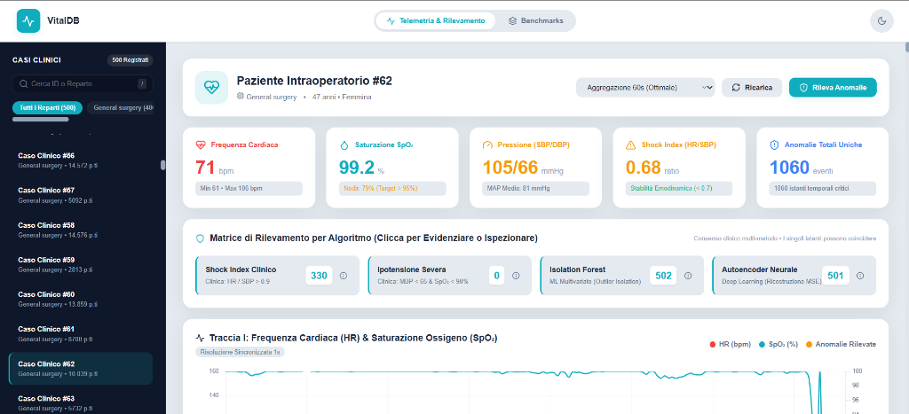
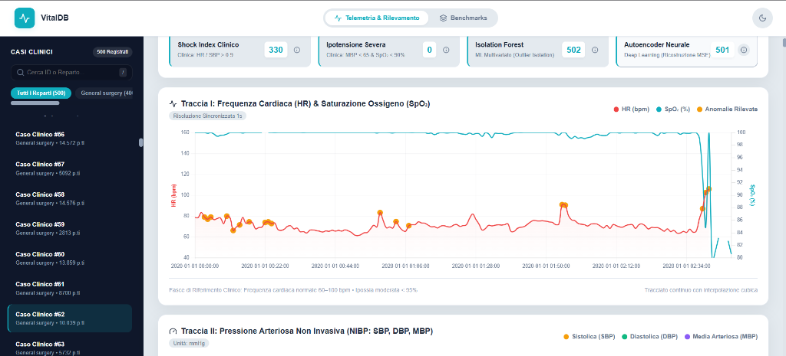

Anomaly detection su dati biometrici
Sala operatoria: tanti dati, poca qualità
Il monitor di sala operatoria raccoglie milioni di punti, ma oltre la metà del dato grezzo è inutilizzabile senza bonifica.
VitalDB: la sorgente dei dati
| Segnale | Descrizione Fisiologica | Unità | Frequenza |
|---|---|---|---|
| HR | Frequenza cardiaca | bpm | 1 s (continuo) |
| SpO₂ | Saturazione periferica O₂ | % | 1 s (continuo) |
| SBP | Pressione sistolica (massima) | mmHg | 2–5 min (NIBP) |
| DBP | Pressione diastolica (minima) | mmHg | 2–5 min (NIBP) |
| MBP | Pressione arteriosa media | mmHg | 2–5 min (NIBP) |
VitalDB raccoglie casi chirurgici reali ad alta risoluzione del Seoul National University Hospital.
Il percorso: dal dato grezzo all'allarme
Pipeline end-to-end con governance dei dati, archiviazione time series e rilevamento anomalie a due livelli.
Raccolta
Scaricamento atomico da VitalDB nel formato nativo compresso.
ParquetBonifica
Isolamento valori impossibili e forward-fill controllato.
PandasArchiviazione
Caricamento ottimizzato su database per serie storiche.
MongoDB 8.0Rilevamento
Regole cliniche d'emergenza + Machine Learning multi-segnale.
scikit-learn · PyTorchEsposizione
API REST modulari e interfaccia interattiva per il personale medico.
FastAPI · DockerArchitettura Medallion: progressiva raffinazione
Bronze
- 5 segnali al secondo scaricati dall'API di VitalDB.
- Formato Parquet con compressione snappy a colonne.
- Nessuna modifica: è la fonte di verità storica.
Silver
- Valori fisiologicamente impossibili isolati.
- Forward-fill con finestra massima di 5 minuti.
- Partizionamento per reparto chirurgico.
Gold
- Collezione Time Series nativa MongoDB 8.0.
- Raggruppamento automatico in bucket da 1.000 s.
- Registry casi validato con JSON Schema rigoroso.
Livello Bronze: ingestione atomica e tracciata
Il livello Bronze memorizza i tracciati clinici esattamente come registrati dal monitor, garantendo riproducibilità totale.
Livello Silver: taglio dei valori impossibili
I disturbi elettrici e il distacco dei sensori producono valori fisiologicamente incompatibili con la vita.
| Parametro | Range Fisiologico Accettabile |
|---|---|
| Frequenza cardiaca (HR) | 20 – 250 bpm |
| Ossigenazione (SpO₂) | 50 – 100 % |
| Pressione sistolica (SBP) | 40 – 250 mmHg |
| Pressione diastolica (DBP) | 10 – 180 mmHg |
| Pressione media (MBP) | 20 – 220 mmHg |
Esempio pratico: propagazione di un artefatto a 290 mmHg
Livello Silver: ricostruzione e freschezza
Ricostruzione differenziata in base alla dinamica fisiologica di ogni segnale.
Livello Gold: Time Series nativa MongoDB 8.0
{
"timestamp": ISODate("2020-01-01T08:15:30Z"),
"metadata": {
"case_id": 1,
"department": "General surgery",
"age": 64, "sex": "M"
},
"metrics": {
"Solar8000_HR": 72.0,
"Solar8000_PLETH_SPO2": 98.0
// NIBP assente in questo secondo: chiave omessa
},
"quality_flags": {
"HR_outlier": false,
"nibp_age_s": 14.0
}
}
MongoDB 8.0 gestisce le serie temporali come bucket compressi trasparenti con motore a colonne columnar.
Benchmark: spazio su disco e velocità di lettura
Data Governance: integrità e controllo dei dati
Il passaggio alla sala operatoria richiede regole formali di conformità per prevenire record incompleti o corruzioni silenziose.
| Componente | Meccanismo di Controllo | Garanzia Fornita |
|---|---|---|
| registry | JSON Schema Validator | Rifiuto record orfani |
| TRACK_SPECS | Single Source of Truth | Zero drift nelle soglie |
| transazioni | Stato loading → committed | Nessuna lettura parziale |
| quality_report | Generazione automatica | Audit clinico 100% tracciato |
Architettura di rilevamento: quattro metodi complementari
Shock Index (SI)
Indice emodinamico di compenso cardiovascolare rapido.
Ipotensione + Ipossia
Allarme congiunto di ipoperfusione e deficit d'ossigeno.
Isolation Forest
Isolamento rapido geometrico nello spazio 8-dimensionale.
Autoencoder LSTM
Apprendimento della normale dinamica temporale dei segnali.
Autoencoder LSTM: imparare la normalità per scovare le crisi
La rete legge i tracciati (battito, pressione, ossigeno) negli ultimi 30 secondi.
Comprime tutti i dati in un piccolo pacchetto di 32 numeri chiave.
Dal riassunto prova a ridisegnare il tracciato originale esatto.
Impara a memoria solo la salute
La rete è stata addestrata solamente su pazienti sani e stabili. Sa ricostruire alla perfezione solo ciò che è normale.
Leggero e immediato in sala
Invece di copiare milioni di dati in memoria, la pipeline legge i secondi facendoli scorrere come una lente d'ingrandimento.
Come diamo l'allarme: la regola del canale peggiore
In sala operatoria basta che crolli anche un solo parametro vitale per rischiare la vita del paziente.
Non facciamo la media. Guardiamo gli 8 segnali uno per uno e prendiamo il peggiore.
7 segnali sono perfetti e 1 è disastroso. La media fa sembrare tutto tranquillo. Il monitor resta zitto.
Isola subito l'ossigeno che sta crollando ed emette l'allarme avvisando i medici su quale organo intervenire.
Valutazione: confronto con le regole cliniche
| Modello | Precision | Recall | F1-Score | PR-AUC |
|---|---|---|---|---|
| Baseline Casuale | — | — | — | 0,048 |
| Isolation Forest | 0,105 | 0,108 | 0,107 | 0,084 |
| Autoencoder LSTM | 0,093 | 0,096 | 0,095 | 0,064 |
Concordanza: modelli complementari, non concorrenti
| Shock | Ipotens. | IF | LSTM | |
|---|---|---|---|---|
| Shock Index | 1,00 | 0,02 | 0,06 | 0,05 |
| Ipotensione | 0,02 | 1,00 | 0,04 | 0,04 |
| Isolation Forest | 0,06 | 0,04 | 1,00 | 0,36 |
| Autoencoder | 0,05 | 0,04 | 0,36 | 1,00 |
Soglia tarata sul 95° percentile dell'errore di ricostruzione:
Struttura del sistema: microservizi containerizzati
| Metodo | Percorso Endpoint | Scopo Applicativo |
|---|---|---|
| GET | /cases | Elenco catalogo 500 casi in 2 sole query MongoDB |
| GET | /cases/{id}/series | Serie temporale con campionamento 1s / 5min |
| POST | /cases/{id}/detect | Calcolo real-time anomalie regole cliniche + ML |
| GET | /benchmark · /quality | Rapporti automatici su compressione e integrità |
Architettura a tre livelli completamente isolata con Docker Compose.
Dashboard clinica: monitoraggio e allarmi


Progettata per permettere al medico di validare visivamente ogni anomalia.
Sintesi dei risultati: efficienza e affidabilità
Le regole mediche costituiscono il paracadute deterministico per le emergenze; i modelli di Machine Learning intercettano i segnali deboli prima che la crisi si manifesti.